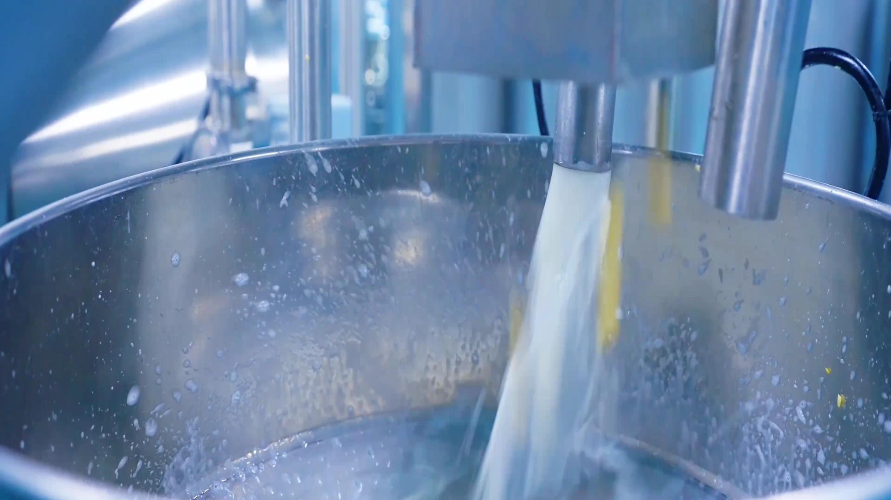

El ingrediente.
La cuidadosa selección de la soja y una preparación limpia marcan la pauta para todo lo que sigue.

Nuestra historia
LaoZhou Foods comenzó con una modesta ambición: hacer tofu que supiera lo suficientemente real como para servirlo a la familia y lo suficientemente sólido como para compartirlo con todos.
El comienzo
En 1986, Zhou Daoyin dejó Anhui con una receta familiar de tofu y comenzó a preparar tofu en Yancheng, Jiangsu. No había un gran plan ni una marca pulida, solo la creencia de que el sabor tenía que ser verdadero y el trabajo tenía que ser honesto.
Esos primeros pasteles de tofu se inspiraron en el tofu prensado al estilo Hui: condimento profundo, estofado aromático y una estructura firme y masticable. También aportó la textura más suave del tofu estilo Jiangsu y los sabores más ricos y en capas de la región.
Lo que surgió fue un tofu envuelto en papel con un carácter equilibrado de soja y especias, un bocado satisfactorio y el tipo de sabor que la gente recordaba. La demanda creció silenciosamente y luego de manera constante.

“味道要真，做人要实。”verdadero sabor. Trabajo honesto.
Del taller a la fábrica
A lo largo de cuatro décadas, el pequeño taller se convirtió en una moderna empresa alimentaria. Más personas podían comprar LaoZhou Foods, pero el estándar seguía siendo personal: ingredientes limpios, proceso cuidadoso y un sabor que los fundadores estarían felices de servir en su propia mesa.
En 2024, la marca entró en un nuevo capítulo con una moderna base de producción inteligente en Xinghua, Jiangsu, que combina el conocimiento tradicional con el control de procesos digitales y la producción automatizada.
Explora nuestra artesanía modernaHitos
Una historia de progreso incremental, construida sobre un oficio duradero.
lo que protegemos
La cuidadosa selección de la soja y una preparación limpia marcan la pauta para todo lo que sigue.
Las recetas antiguas se pueden actualizar con mejores herramientas, pero la profundidad del sabor aún requiere tiempo y atención.
Un producto debe fabricarse como si fuera para las personas que más te importan.
Un nuevo capitulo
La nueva base de producción de LaoZhou Foods aporta mayor automatización y visibilidad digital a un oficio tradicional. Eso significa más consistencia entre bastidores, mientras que la comida en sí se mantiene arraigada en la textura, la soja y un estofado lento y sabroso.

Prueba el próximo capítulo.
Explore la gama o hable con nuestro equipo sobre el formato de producto adecuado para su mercado.